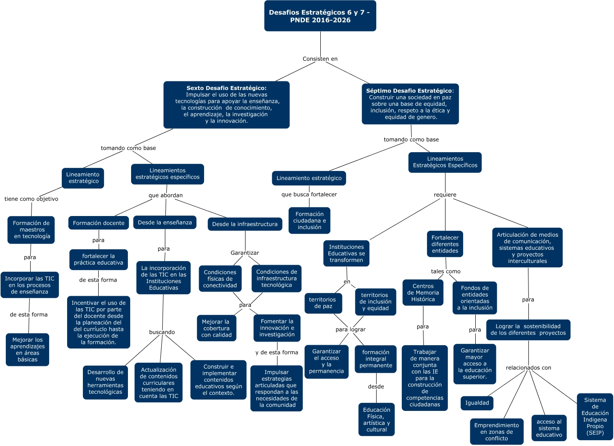

Desafios 6 y 7
Plan Nacional de Educación 2016 - 2026
WARNING:
JavaScript is turned OFF. None of the links on this concept map will
work until it is reactivated.
If you need help turning JavaScript On, click here.
Este Cmap, tiene información relacionada con: Desafios 6-7.cmap, La incorporación de las TIC en las Instituciones Educativas buscando Construir e implementar contenidos educativos según el contexto., Desde la enseñanza para La incorporación de las TIC en las Instituciones Educativas, Centros de Memoria Histórica para Trabajar de manera conjunta con las IE para la construcción de competencias ciudadanas, territorios de inclusión y equidad para lograr formación integral permanente, Lograr la sostenibilidad de los diferentes proyectos relacionados con Sistema de Educación Indigena Propio (SEIP), Desafios Estratégicos 6 y 7 - PNDE 2016-2026 Consisten en Sexto Desafio Estratégico: Impulsar el uso de las nuevas tecnologías para apoyar la enseñanza, la construcción de conocimiento, el aprendizaje, la investigación y la innovación., La incorporación de las TIC en las Instituciones Educativas buscando Actualización de contenidos curriculares teniendo en cuenta las TIC, Lineamiento estratégico tiene como objetivo Formación de maestros en tecnología, Condiciones de infraestructura tecnológica para Fomentar la innovación e investigación, Lineamientos Estratégicos Específicos requiere Fortalecer diferentes entidades, fortalecer la práctica educativa de esta forma Incentivar el uso de las TIC por parte del docente desde la planeación del del curríuclo hasta la ejecución de la formación., Lineamientos Estratégicos Específicos requiere Instituciones Educativas se transformen, Formación de maestros en tecnología para Incorporar las TIC en los procesos de enseñanza, Sexto Desafio Estratégico: Impulsar el uso de las nuevas tecnologías para apoyar la enseñanza, la construcción de conocimiento, el aprendizaje, la investigación y la innovación. tomando como base Lineamiento estratégico, Lograr la sostenibilidad de los diferentes proyectos relacionados con Igualdad, Fomentar la innovación e investigación y de esta forma Impulsar estrategias articuladas que respondan a las necesidades de la comunidad, Lineamientos Estratégicos Específicos requiere Articulación de medios de comunicación, sistemas educativos y proyectos interculturales, La incorporación de las TIC en las Instituciones Educativas buscando Desarrollo de nuevas herramientas tecnológicas, Lineamientos estratégicos específicos que abordan Desde la infraestructura, Lineamiento estratégico que busca fortalecer Formación ciudadana e inclusión
